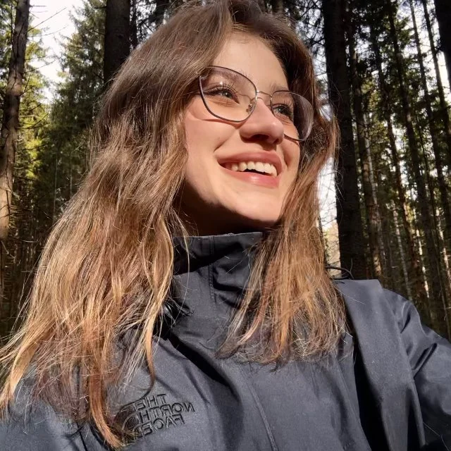
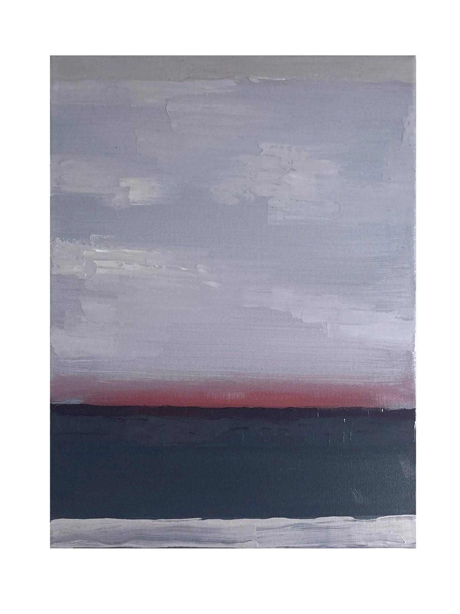
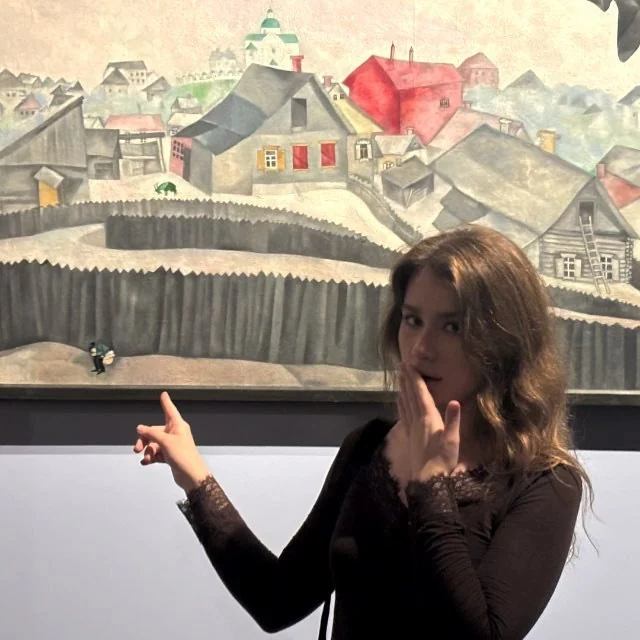
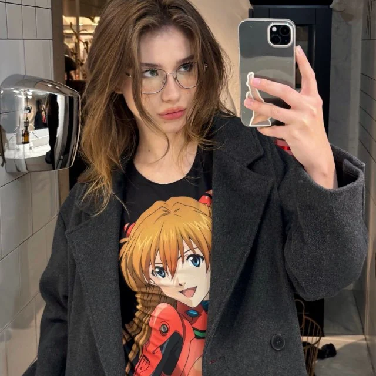

исходник → холст
Живопись как перевод состояний
Превращаю городскую тревогу, поп-культурные привязанности, цветы, любовь и трудноуловимые воспоминания в живопись.




иногда воспоминание приходит позже, чем картина
процесс:
из студии ↗
живопись, холст, масло
Не витрина красивых картинок, а место, где работа получает голос
Я — художница и студентка-переводчица. Слова — мой второй язык. Но главный — живопись. Я перевожу не фразы, а то, что трудно сказать вслух.

Картины — это ещё один способ перевода. Только не слов, а состояний
живопись, холст, масло
Работы
Подборка оригинальных работ. Каждая картина — часть личного дневника и попытка перевести состояния в живопись.
живопись, холст, масло
2018—2026
По этим меткам ничего не найдено
Попробуйте изменить запрос или вернуться к полному архиву.
архив иногда прячет самое нужное
Не только работы, но и среда, из которой они появляются
Хронология студийной жизни, полевых заметок и маленьких открытий. Не только финальные работы, но и путь к ним.
В наличии в студии
Оригинальные работы, доступные для приобретения. Каждая картина — часть живого архива мастерской.
пишите в Telegram @lybitik →
@lybitik Отвечаю лично. Быстро уточню детали и помогу с выбором.
живопись, холст, масло
Покупка, выставка, коллаборация или просто маякнуть
Пишите — обсудим работу, идею, сотрудничество или просто поздороваемся.

3 Готово! Сообщение сгенерировано
Готово! Ваше сообщение подготовлено для Telegram.
скопируйте и отправьте в Telegram или откройте чат с вами.